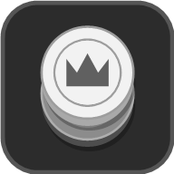
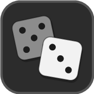
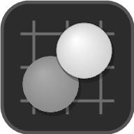
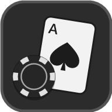

SchachGegen den Computer (3 Stärken) oder zu zweit, mit Tipp und Statistik.

DameDeutsch, Russisch, Brasilianisch oder Checkers – gegen den Computer oder zu zweit.

BackgammonMit Verdopplungswürfel und Punktestand, gegen den Computer oder zu zweit.

Go9 × 9, 13 × 13 oder 19 × 19 mit Auszählen der Gebiete.

PokerTexas Hold'em als Turnier gegen 1, 3 oder 5 Computer-Spieler.
Black JackGegen die Bank mit Guthaben, Tipp nach der Grundstrategie und Statistik.
Auf dem Handy ein Spiel öffnen und im Browser-Menü „Zum Startbildschirm hinzufügen“ wählen – dann läuft es wie eine App, auch ohne Internet. Spielstände und Statistik bleiben auf dem jeweiligen Gerät.